Navferty's Excel Add-In
A free Excel add-in that enhances productivity with tools for data manipulation, formatting, and validation.
- Free
- Open source (MIT)
- For desktop Excel on Windows
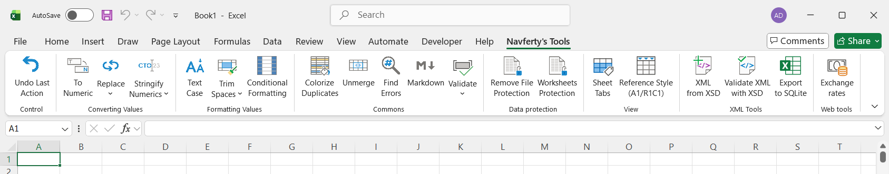
Guides for everyday Excel problems
Most of these start with the problem and show the built-in way to solve it. The add-in is mentioned where it saves some clicks.
How to find all errors in Excel (#VALUE!, #REF!, #DIV/0!)Ways to locate every formula error in a sheet, and what each error usually means.
Converting text numbers to numeric valuesWhy numbers become text in Excel and several ways to convert them back.
Removing extra spaces in ExcelTRIM, non-breaking spaces and line breaks: how to clean text cells properly.
Highlighting duplicate values without formulasConditional formatting, Remove Duplicates and what to do when you need to see which rows match.
VLOOKUP in Excel: syntax, examples and common errorsSyntax, a worked example with two sheets, the usual reasons for #N/A, and XLOOKUP or INDEX/MATCH as alternatives.
Excel keyboard shortcuts that save the most timeShortcuts for editing, moving, selecting, filling and pasting, grouped by task.
Commands
Everything on the Navferty's Tools ribbon tab. Open a command to see what it does with before/after screenshots.
Clean up text and numbers
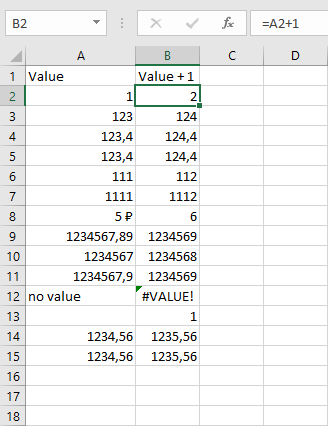
Parse NumericsTurns numbers stored as text into real numbers.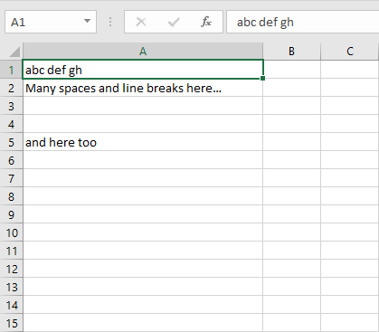
Trim SpacesRemoves extra spaces and line breaks from text cells.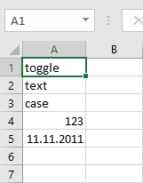
Toggle CaseCycles text between Abc, abc and ABC.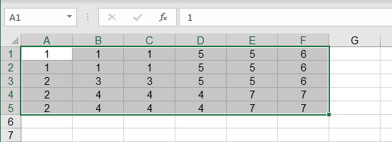
Unmerge CellsUnmerges cells and fills each one with the original value. Conditional FormattingFills conditional formatting across the whole table, based on the first row.Letters and number formats
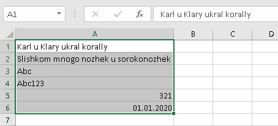
ReplaceTransliterates Cyrillic or swaps look-alike letters for Latin ones.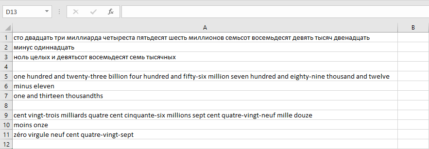
Stringify NumericsWrites numbers in words in Russian, English or French.Find problems in data
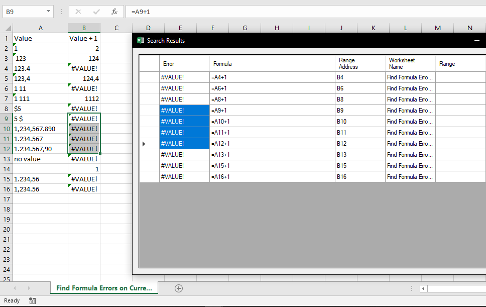
Find All Cells Containing ErrorsLists every formula error in the selection and jumps to it.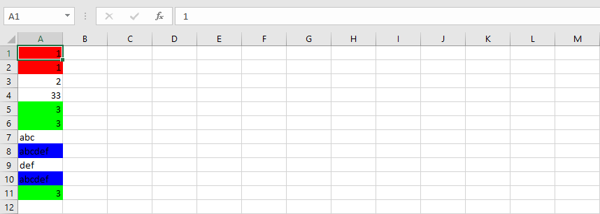
Highlight DuplicationsColours repeated values, one colour per group.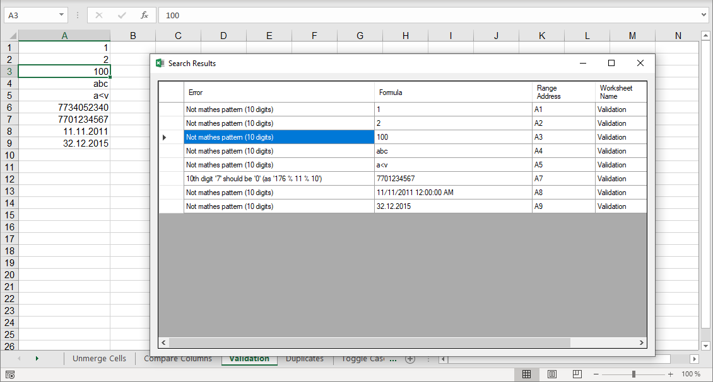
Validate ValuesChecks values as numbers, dates, TIN or XML-safe text.Export, XML and protection
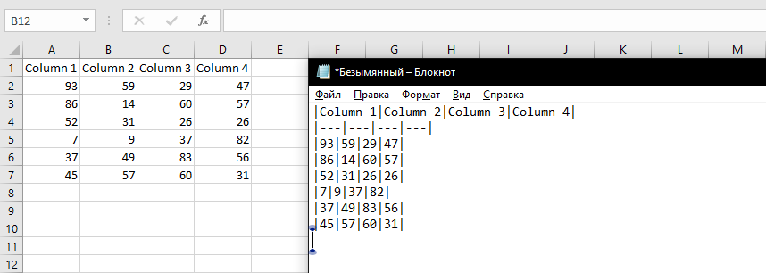
Copy as MarkdownCopies the selected cells as a Markdown table.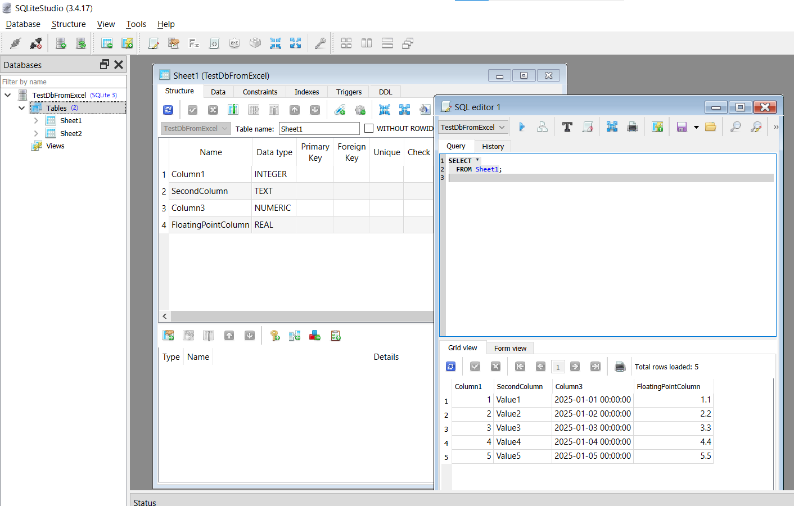
Export to SQLiteSaves the whole workbook as a SQLite database. Create Sample XML based on XSDBuilds a sample XML file from an XSD schema. Validate XML with XSDChecks an XML file against an XSD and reports errors in a sheet. Unprotect WorkbookRemoves protection from sheets, structure and VBA projects. Worksheets ProtectionProtects or unprotects many worksheets at once. Undo Last ActionReverts the last change made by the add-in.More tools
Installation
1
2
Run the installation
Double-click the downloaded setup.exe file and follow the installation wizard.
3
Restart Excel
If Excel was open during installation, restart it. You'll see the new Navferty's Tools tab in the ribbon.